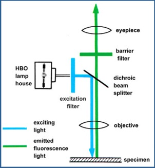

Deel 1: Microscopische technieken
Het woord “microscopie” is afkomstig van het Griekse “mikros”, wat “klein” betekent, en “skopeo” wat “kijken naar” betekent. Al sinds het prille begin van wetenschappelijk onderzoek heeft de mens steeds kleinere details willen waarnemen. Biologen en biomedici waren geïnteresseerd in de structuur van cellen, bacteriën, virussen en colloïdale deeltjes. Materiaalonderzoekers wilden inhomogeniteiten en structuurfouten ontdekken in metalen, kristallen en keramiek.
Om structuren waar te nemen die niet met het blote oog zichtbaar zijn, gebruik je een microscoop. Een microscoop moet drie functies vervullen: een vergroot beeld van het specimen produceren (vergroting), de details in het beeld scheiden (resolutie) en de details zichtbaar maken voor het menselijk oog, voor een camera of voor een ander waarnemingsapparaat/beeldopname-apparaat (contrast).
Mensen kunnen met het blote oog structuren waarnemen die minimum 100-200 µm van elkaar verwijderd zijn. Een moderne lichtmicroscoop (die we in de practica gebruiken) heeft een vergroting van ongeveer 1000x en maakt het mogelijk details waar te nemen die 0.2 µm van elkaar verwijderd zijn. Wanneer elektronen worden gebruikt in plaats van zichtbaar licht (bij de elektronenmicroscoop), kunnen vergrotingen bereikt worden van 450.000x met een resolutie van 0,1 nm.
Het belang van de microscoop als basisinstrument in de natuurwetenschappen kan niet genoeg benadrukt worden. Verschillende types van microscopen worden gebruikt in tal van situaties: bij het stellen van klinische diagnoses, het visualiseren van structuren voor onderwijs- of voor onderzoeksdoeleinden (en dit zowel voor gefixeerd als levend materiaal), om er maar enkele op te noemen.
In je latere beroepsloopbaan als dierenarts zal je dan ook meermaals geconfronteerd worden met microscopen. Daarom is het van belang dat je leert hoe deze instrumenten functioneren en hoe je ze op de juiste manier gebruikt. Daarnaast is het van belang om te beseffen dat van de cellen en weefsels preparaten moeten worden gemaakt die het mogelijk maken om ze in de microscoop te bekijken. Ook deze voorbereidingstechnieken worden, zonder in al te veel details te vervallen, in onderstaande tekst toegelicht.
Om structuren waar te nemen die niet met het blote oog zichtbaar zijn, gebruik je een microscoop. Een microscoop moet drie functies vervullen: een vergroot beeld van het specimen produceren (vergroting), de details in het beeld scheiden (resolutie) en de details zichtbaar maken voor het menselijk oog, voor een camera of voor een ander waarnemingsapparaat/beeldopname-apparaat (contrast).
Mensen kunnen met het blote oog structuren waarnemen die minimum 100-200 µm van elkaar verwijderd zijn. Een moderne lichtmicroscoop (die we in de practica gebruiken) heeft een vergroting van ongeveer 1000x en maakt het mogelijk details waar te nemen die 0.2 µm van elkaar verwijderd zijn. Wanneer elektronen worden gebruikt in plaats van zichtbaar licht (bij de elektronenmicroscoop), kunnen vergrotingen bereikt worden van 450.000x met een resolutie van 0,1 nm.
Het belang van de microscoop als basisinstrument in de natuurwetenschappen kan niet genoeg benadrukt worden. Verschillende types van microscopen worden gebruikt in tal van situaties: bij het stellen van klinische diagnoses, het visualiseren van structuren voor onderwijs- of voor onderzoeksdoeleinden (en dit zowel voor gefixeerd als levend materiaal), om er maar enkele op te noemen.
In je latere beroepsloopbaan als dierenarts zal je dan ook meermaals geconfronteerd worden met microscopen. Daarom is het van belang dat je leert hoe deze instrumenten functioneren en hoe je ze op de juiste manier gebruikt. Daarnaast is het van belang om te beseffen dat van de cellen en weefsels preparaten moeten worden gemaakt die het mogelijk maken om ze in de microscoop te bekijken. Ook deze voorbereidingstechnieken worden, zonder in al te veel details te vervallen, in onderstaande tekst toegelicht.
De samengestelde lichtmicroscoop
Microscopen bevatten altijd lenzen, waarbij voor elk van hen gebruik gemaakt wordt van de lenstheorie.De eerste microscopen waren slechts met één lens uitgerust en werden ‘enkelvoudige’ microscopen genoemd (bijvoorbeeld de eerste microscopen die ontworpen werden door Antoni Van Leeuwenhoek in de 17de eeuw).
Vandaag de dag hebben alle moderne lichtmicroscopen minstens twee lenzen en zijn ze dus 'samengesteld'. Een samengestelde microscoop werkt volgens het volgende basisprincipe: het beeld dat door de eerste lens wordt gevormd, wordt vergroot door de tweede lens, waardoor de vergroting die verkregen wordt, heel wat hoger is dan bij een enkele lens. Hier kan je schematisch terugvinden hoe dit lenzensysteem bij een samengestelde lichtmicroscoop werkt.
Onderdelen van de lichtmicroscoop
Het basisinstrument is de samengestelde conventionele lichtmicroscoop. Deze heeft verschillende onderdelen die inherent zijn aan alle instrumenten ongeacht merk of model.
Alle onderdelen worden samengehouden door een statief. In sommige gevallen incorporeert het statief ook filters en/of fotografische onderdelen. De objecttafel (= preparaattafel (4)) is het beweegbaar gedeelte dat uit het statief steekt en waarop het preparaat dient geplaatst te worden. Bij de meeste moderne lichtmicroscopen stel je het beeld scherp door de preparaattafel op- of neerwaarts te bewegen terwijl de lenzen zelf op hun plaats blijven. Nochtans is dit niet altijd het geval; bij sommige modellen (bv. bij microscopische opstellingen voor elektrofysiologie) is de preparaattafel onbeweeglijk in de z-as en bewegen de lenzen.
Onder de preparaattafel bevindt zich het belichtingssysteem dat uit een lichtbron (12) en een condensor (6) bestaat. Dit laatste onderdeel is een set lenzen die de straal van de lichtbron opvangen en ze via breking tot een coherente, relatief smalle lichtbundel herleiden. Dit is nodig als je het preparaat gelijkmatig en maximaal wil belichten. Anders zou veel van de lichtsterkte verloren gaan doordat je het onderste deel van de preparaattafel zou belichten en niet het preparaat zelf. In de condensor is een condensordiafragma (7) ingebouwd. Tussen de lichtbron en de condensor bevindt zich bij de betere microscopen ook nog een tweede diafragma (velddiafragma (11) genoemd). Bij deze microscopen is het mogelijk om de belichting optimaal in te stellen volgens de methode van ‘Köhler’ (we spreken hier ook wel eens van “köhleren”, maw het instellen van het optimale belichtingsvlak telkens we van vergroting veranderen).
Moderne microscopen zijn doorgaans uitgerust met drie tot vijf objectieflenzen (3) die op een roteerbare schijf, de objectiefverwisselaar/revolver (3), gemonteerd zijn. Het zijn deze lenzen die het primair beeld van het object vormen en verantwoordelijk zijn voor het grootste gedeelte van de vergroting. De kwaliteit van deze lenzen bepaalt de kwaliteit van de microscoop; de prijs van de duurdere modellen wordt dus voor het overgrote deel bepaald door de kwaliteit van de lenzen.
Het primaire beeld wordt een tweede keer vergroot door de oculairlenzen. De uiteindelijke vergroting van een beeld is het product van de individuele vergrotingen van het objectief en het oculair: VERGRtot= VERGRobjX VERGRocl.
Hoe dit in beeld in de praktijk gevormd wordt kan je hier terugvinden.
De belangrijkste overweging bij het kopen van een microscoop is de resolutie (scheidend of oplossend vermogen). Resolutie is het vermogen van een microscoop om twee punten op een coupe als afzonderlijk te kunnen waarnemen. Bij de beste lichtmicroscopen bedraagt deze afstand bij optimale instelling 0,2 µm.
De formule voor de resolutie van een microscoop is:
λ staat voor de golflengte van de belichting en NA voor de numerieke apertuur van de objectieflens.
De numerieke apertuur NA is een kwaliteitswaardemeter voor het objectief en wordt als volgt gedefinieerd: NA= n x sin µ waarbij n staat voor de brekingsindex van het medium en μ voor de halve tophoek van de apertuurkegel.
Onder de preparaattafel bevindt zich het belichtingssysteem dat uit een lichtbron (12) en een condensor (6) bestaat. Dit laatste onderdeel is een set lenzen die de straal van de lichtbron opvangen en ze via breking tot een coherente, relatief smalle lichtbundel herleiden. Dit is nodig als je het preparaat gelijkmatig en maximaal wil belichten. Anders zou veel van de lichtsterkte verloren gaan doordat je het onderste deel van de preparaattafel zou belichten en niet het preparaat zelf. In de condensor is een condensordiafragma (7) ingebouwd. Tussen de lichtbron en de condensor bevindt zich bij de betere microscopen ook nog een tweede diafragma (velddiafragma (11) genoemd). Bij deze microscopen is het mogelijk om de belichting optimaal in te stellen volgens de methode van ‘Köhler’ (we spreken hier ook wel eens van “köhleren”, maw het instellen van het optimale belichtingsvlak telkens we van vergroting veranderen).
Moderne microscopen zijn doorgaans uitgerust met drie tot vijf objectieflenzen (3) die op een roteerbare schijf, de objectiefverwisselaar/revolver (3), gemonteerd zijn. Het zijn deze lenzen die het primair beeld van het object vormen en verantwoordelijk zijn voor het grootste gedeelte van de vergroting. De kwaliteit van deze lenzen bepaalt de kwaliteit van de microscoop; de prijs van de duurdere modellen wordt dus voor het overgrote deel bepaald door de kwaliteit van de lenzen.
Het primaire beeld wordt een tweede keer vergroot door de oculairlenzen. De uiteindelijke vergroting van een beeld is het product van de individuele vergrotingen van het objectief en het oculair: VERGRtot= VERGRobjX VERGRocl.
Hoe dit in beeld in de praktijk gevormd wordt kan je hier terugvinden.
Resolutie en numerieke apertuur
De belangrijkste overweging bij het kopen van een microscoop is de resolutie (scheidend of oplossend vermogen). Resolutie is het vermogen van een microscoop om twee punten op een coupe als afzonderlijk te kunnen waarnemen. Bij de beste lichtmicroscopen bedraagt deze afstand bij optimale instelling 0,2 µm.
De formule voor de resolutie van een microscoop is:
R=λ /NA
λ staat voor de golflengte van de belichting en NA voor de numerieke apertuur van de objectieflens.
De numerieke apertuur NA is een kwaliteitswaardemeter voor het objectief en wordt als volgt gedefinieerd: NA= n x sin µ waarbij n staat voor de brekingsindex van het medium en μ voor de halve tophoek van de apertuurkegel.
Bij het gebruik van droge objectieven (medium is dan lucht) zal de NA dus steeds kleiner zijn dan 1. De maximale NA bij olie-immersielenzen bedraagt ongeveer 1.4 en bij water-immersie lenzen 1.2.
Uit deze vergelijking kan je een aantal zaken afleiden. Vooreerst is het nogal vanzelfsprekend dat hoe hoger de NA is, hoe beter de resolutie zal zijn want R zal kleiner worden. Ten tweede zou het ook duidelijk moeten zijn dat hoe korter de golflengte is, hoe beter de resolutie wordt. Met andere woorden, een hoge resolutie bekom je als je de NA zo hoog mogelijk en de golflengte van de belichting zo kort mogelijk houdt. Het belichtingssysteem moet altijd zo ingesteld staan dat een maximale helderheid bekomen wordt. Een lage belichtingsintensiteit heeft namelijk een lagere resolutie tot gevolg.
Wanneer we enkel zouden moeten rekening houden met deze geometrische optica, zou het mogelijk zijn om zuivere vergrotingen te bekomen die verschillende duizenden keren groter zijn dan het specimen zelf. Jammer genoeg ontdekten de optica-experten van de 19e eeuw (Abbe, Rayleigh, Airy en anderen) dat er andere factoren meespelen die remmend werken op onbeperkte vergrotingen.
Preparaten die je kan bekijken met een conventionele lichtmicroscoop kunnen op verschillende manieren gemaakt worden. Eén van de eenvoudigste preparaten om te maken is een uitstrijkje van cellen in suspensie (bijvoorbeeld bloed).
Voor het bestuderen van de meeste organen tijdens de practica histologie gebruik je echter weefselsneden (= weefselcoupes).
Het orgaan of weefsel dat voor microscopisch onderzoek wordt geselecteerd, wordt uit het dier verwijderd en gefixeerd door perfusie (via de bloedbaan) of immersie (onderdompelen) in bv. formaldehyde. Dit fixatieproces is noodzakelijk om degradatie van het weefsel door bacteriën en enzymen (autolyse) tegen te gaan. Fixatie kan gebeuren door chemische verbindingen (cross-linking) tussen het fixatief en de in het weefsel aanwezige biomoleculen. Door fixatie blijft de (ultra)structuur van het weefsel bewaard.
Na deze stap wordt het gefixeerde weefsel eerst gespoeld, vervolgens gedehydrateerd in een aantal baden met een oplopende concentratie van ethanol en tenslotte via een aantal tussenstappen ingebed in paraffine.
Het met paraffine geïmpregneerde weefselblokje wordt in de houder van een microtoom geplaatst, een apparaat dat (zoals de naam doet vermoeden) zeer dunne schijfjes van het weefselblokje snijdt. “Zeer dun” betekent in dit geval ongeveer 2 tot 7 µm dik. Dit schijfje (= coupe/weefselsnede) wordt nu op een draagglaasje opgevangen en gedeparaffineerd met behulp van xyleen. Via een omgekeerde alcoholreeks wordt het weefsel opnieuw in een waterig milieu gebracht om vervolgens gekleurd te worden.
Kleuring is noodzakelijk om contrast te bekomen, want niet-gekleurd weefsel heeft ongeveer dezelfde brekingsindex als glas en zou bijgevolg in de gewone lichtmicroscoop met doorvallend licht weinig zichtbaar zijn. Het kleuringsproces verleent kleur aan het weefsel, waardoor de verschillende structuren kunnen worden gedifferentieerd.
Een veelvuldig gebruikte overzichtskleuring (ook in de pathologie) is de hematoxyline/eosine- of kortweg HE-kleuring, wat in feite een combinatie is van twee kleurstoffen. Hematoxyline (een ‘basische’ kleurstof’) staat bekend voor zijn affiniteit voor zuur materiaal in het weefsel. Zo zal deze kleurstof zich bijvoorbeeld aan de nucleïne-zuren binden en bijgevolg de celkernen kleuren. Het andere bestanddeel, eosine (een ‘zure’ kleurstof), werd oorspronkelijk gebruikt voor het kleuren van kleding en bindt aan basische bestanddelen. De kleurstof ontleent haar naam aan “eos”, wat Grieks is voor “dageraad”, omdat de kleurstof een roze tint heeft zoals de opkomende zon op een heldere morgen. Het beeld hieronder is genomen van een preparaatje gekleurd met een HE-kleuring.
Uit deze vergelijking kan je een aantal zaken afleiden. Vooreerst is het nogal vanzelfsprekend dat hoe hoger de NA is, hoe beter de resolutie zal zijn want R zal kleiner worden. Ten tweede zou het ook duidelijk moeten zijn dat hoe korter de golflengte is, hoe beter de resolutie wordt. Met andere woorden, een hoge resolutie bekom je als je de NA zo hoog mogelijk en de golflengte van de belichting zo kort mogelijk houdt. Het belichtingssysteem moet altijd zo ingesteld staan dat een maximale helderheid bekomen wordt. Een lage belichtingsintensiteit heeft namelijk een lagere resolutie tot gevolg.
Wanneer we enkel zouden moeten rekening houden met deze geometrische optica, zou het mogelijk zijn om zuivere vergrotingen te bekomen die verschillende duizenden keren groter zijn dan het specimen zelf. Jammer genoeg ontdekten de optica-experten van de 19e eeuw (Abbe, Rayleigh, Airy en anderen) dat er andere factoren meespelen die remmend werken op onbeperkte vergrotingen.
Voorbereiding van een preparaat voor conventionele lichtmicroscopie
Preparaten die je kan bekijken met een conventionele lichtmicroscoop kunnen op verschillende manieren gemaakt worden. Eén van de eenvoudigste preparaten om te maken is een uitstrijkje van cellen in suspensie (bijvoorbeeld bloed).
Voor het bestuderen van de meeste organen tijdens de practica histologie gebruik je echter weefselsneden (= weefselcoupes).
Het orgaan of weefsel dat voor microscopisch onderzoek wordt geselecteerd, wordt uit het dier verwijderd en gefixeerd door perfusie (via de bloedbaan) of immersie (onderdompelen) in bv. formaldehyde. Dit fixatieproces is noodzakelijk om degradatie van het weefsel door bacteriën en enzymen (autolyse) tegen te gaan. Fixatie kan gebeuren door chemische verbindingen (cross-linking) tussen het fixatief en de in het weefsel aanwezige biomoleculen. Door fixatie blijft de (ultra)structuur van het weefsel bewaard.
Na deze stap wordt het gefixeerde weefsel eerst gespoeld, vervolgens gedehydrateerd in een aantal baden met een oplopende concentratie van ethanol en tenslotte via een aantal tussenstappen ingebed in paraffine.
Het met paraffine geïmpregneerde weefselblokje wordt in de houder van een microtoom geplaatst, een apparaat dat (zoals de naam doet vermoeden) zeer dunne schijfjes van het weefselblokje snijdt. “Zeer dun” betekent in dit geval ongeveer 2 tot 7 µm dik. Dit schijfje (= coupe/weefselsnede) wordt nu op een draagglaasje opgevangen en gedeparaffineerd met behulp van xyleen. Via een omgekeerde alcoholreeks wordt het weefsel opnieuw in een waterig milieu gebracht om vervolgens gekleurd te worden.
Kleuring is noodzakelijk om contrast te bekomen, want niet-gekleurd weefsel heeft ongeveer dezelfde brekingsindex als glas en zou bijgevolg in de gewone lichtmicroscoop met doorvallend licht weinig zichtbaar zijn. Het kleuringsproces verleent kleur aan het weefsel, waardoor de verschillende structuren kunnen worden gedifferentieerd.
Een veelvuldig gebruikte overzichtskleuring (ook in de pathologie) is de hematoxyline/eosine- of kortweg HE-kleuring, wat in feite een combinatie is van twee kleurstoffen. Hematoxyline (een ‘basische’ kleurstof’) staat bekend voor zijn affiniteit voor zuur materiaal in het weefsel. Zo zal deze kleurstof zich bijvoorbeeld aan de nucleïne-zuren binden en bijgevolg de celkernen kleuren. Het andere bestanddeel, eosine (een ‘zure’ kleurstof), werd oorspronkelijk gebruikt voor het kleuren van kleding en bindt aan basische bestanddelen. De kleurstof ontleent haar naam aan “eos”, wat Grieks is voor “dageraad”, omdat de kleurstof een roze tint heeft zoals de opkomende zon op een heldere morgen. Het beeld hieronder is genomen van een preparaatje gekleurd met een HE-kleuring.

HE kleuring van de maag. Onderaan zie je spierweefsel (iets feller roze). Bovenaan in beeld de maagklieren. Het cytoplasma van de ronde kliercellen is roze; de kernen blauw-paars.
Er zijn letterlijk nog duizenden andere kleuringen, maar in de praktijk gebruikt men er slechts een paar tientallen. Naarmate de cursus vordert, zullen nieuwe kleuringstechnieken geïntroduceerd worden waarbij hun eigenschappen en kleuringsaffiniteit zullen worden besproken.
Na de kleuring zal de nu gekleurde coupe opnieuw ontwaterd (gedehydrateerd) worden (door opnieuw een stijgende alcoholreeks te gebruiken) om vervolgens ingesloten te worden met een niet-waterig inbeddingsmedium (bv. Permount) om uitdroging te voorkomen.
De coupe is nu klaar om bekeken te worden in het microscoop.
I. Fasecontrastmicroscopie
De structuren van ongekleurde preparaten zijn met het blote oog of in de microscoop met een normale helderveldverlichting slecht of helemaal niet waar te nemen omdat de structuren min of meer dezelfde brekingsindex hebben. Lichtgolven die op diverse plaatsen door een dergelijk preparaat heengaan verschillen niet in amplitude (intensiteit), maar alleen in hun ‘fase’.
Aangezien het oog alleen verschillen in intensiteit kan waarnemen - ook het verschil in kleur vindt zijn oorsprong in intensiteitsverschillen - blijven de faseverschillen en daarmee ook de structuren van dergelijke objecten onzichtbaar.
De fasecontrasttechniek houdt in dat op de plaats van faseverschillen die het object veroorzaakt, kunstmatige helderheidsverschillen aangebracht worden. Het beeld toont dan de juiste geometrische vorm van de details.
Dit kan vooral van nut zijn bij het bekijken van levende cellen, aangezien een aantal kleurstoffen duidelijk cytotoxische eigenschappen hebben.
Voorbeeld van een beeld opgenomen met fasecontrast.
II. Donkerveldmicroscopie
Eenvoudige donkerveldbelichting krijgen we als we uitgaan van een fasecontrast condensor en een normaal helderveld-objectief (geen fasecontrast-objectief), waarbij we de diameter van het ringdiafragma zo kiezen, dat zijn reguliere afbeelding groter is dan de uittredepupil van het objectief. Ieder punt van het object wordt dan door een holle kegel van licht belicht, waarvan de binnenste openingshoek groter is dan de apertuur van het objectief. Dit leidt er toe dat er geen direct licht het objectief bereikt, zodat het beeldvlak donker zal zijn.
Op plaatsen waar het licht gebroken, afgebogen of weerkaatst wordt door het object, zal dit licht het eigenlijke microscoopbeeld vormen.
Om ook zwak licht-verstrooiende objecten nog te kunnen waarnemen gebruiken we speciale donkerveldcondensoren en een sterke lichtbron. Het kenmerk bij uitstek van donkerveldmicroscopie is dus dat er geen direct, rechtlijnig uit de condensor komend, licht in het objectief valt, maar dat alleen het door de objectstructuur afgebogen en verstrooide licht een bijdrage levert aan de beeldvorming.
Voorbeeld van een beeld opgenomen met donkerveld.
III. Polarisatiemicroscopie
Polarisatiemicroscopen worden gebruikt in bepaalde vakgebieden, waar de objecten repeterende structuren hebben. Als we normale (i.e. de meeste biologische) preparaten tussen twee gekruiste polarisatoren plaatsen en zo bekijken, zal het beeld donker blijven. Wanneer we echter ongekleurd skeletspierweefsel op deze manier zouden bekijken, zien we afwisselend donkere en lichte banden op die plaatsen waar de skeletspiervezels overlangs zijn aangesneden. Het biomedische toepassingsgebied van polarisatiemicroscopie is eerder beperkt. Polarisatiemicroscopie wordt vooral gebruikt voor het bestuderen van kristallen (oplichten van kleurloze en gekleurde vlakken). Het grootste toepassingsgebied is in de vakgebieden van mineralogie en geologie.
IV. Differentiaal-interferentie-contrast (DIC/Nomarski)
DIC wordt feitelijk net zo gebruikt als fasecontrast, maar is bij wat dikkere preparaten en bij grotere brekingsindexverschillen in het preparaat beter bruikbaar dan fasecontrast. De natuurkundige principes, het gebruik en de beeldindruk zijn bij DIC volledig verschillend dan die bij fasecontrast.
Bij DIC maken we gebruik van principes uit de polarisatiemicroscopie voor de contrastering van faseobjecten. Het zou ons echter in het kader van deze cursus te ver leiden om hier verder op in te gaan. DIC-beeldvorming komt eveneens het best tot zijn recht op ongekleurde preparaten en geeft een indruk van driedimensionaal perspecti ef.
Voorbeeld van een beeld opgenomen met DIC.
“Fluorescentie” is de eigenschap van bepaalde atomen en moleculen om licht van een bepaalde golflengte te absorberen en na een kort tijdsinterval (=“fluorescence lifetime”) terug uit te zenden.
Na de kleuring zal de nu gekleurde coupe opnieuw ontwaterd (gedehydrateerd) worden (door opnieuw een stijgende alcoholreeks te gebruiken) om vervolgens ingesloten te worden met een niet-waterig inbeddingsmedium (bv. Permount) om uitdroging te voorkomen.
De coupe is nu klaar om bekeken te worden in het microscoop.
Andere veel gebruikte microscopische technieken als aanvulling op de klassieke lichtmicroscopie met doorvallende belichting.
I. Fasecontrastmicroscopie
De structuren van ongekleurde preparaten zijn met het blote oog of in de microscoop met een normale helderveldverlichting slecht of helemaal niet waar te nemen omdat de structuren min of meer dezelfde brekingsindex hebben. Lichtgolven die op diverse plaatsen door een dergelijk preparaat heengaan verschillen niet in amplitude (intensiteit), maar alleen in hun ‘fase’.
Aangezien het oog alleen verschillen in intensiteit kan waarnemen - ook het verschil in kleur vindt zijn oorsprong in intensiteitsverschillen - blijven de faseverschillen en daarmee ook de structuren van dergelijke objecten onzichtbaar.
De fasecontrasttechniek houdt in dat op de plaats van faseverschillen die het object veroorzaakt, kunstmatige helderheidsverschillen aangebracht worden. Het beeld toont dan de juiste geometrische vorm van de details.
Dit kan vooral van nut zijn bij het bekijken van levende cellen, aangezien een aantal kleurstoffen duidelijk cytotoxische eigenschappen hebben.
Voorbeeld van een beeld opgenomen met fasecontrast.
II. Donkerveldmicroscopie
Eenvoudige donkerveldbelichting krijgen we als we uitgaan van een fasecontrast condensor en een normaal helderveld-objectief (geen fasecontrast-objectief), waarbij we de diameter van het ringdiafragma zo kiezen, dat zijn reguliere afbeelding groter is dan de uittredepupil van het objectief. Ieder punt van het object wordt dan door een holle kegel van licht belicht, waarvan de binnenste openingshoek groter is dan de apertuur van het objectief. Dit leidt er toe dat er geen direct licht het objectief bereikt, zodat het beeldvlak donker zal zijn.
Op plaatsen waar het licht gebroken, afgebogen of weerkaatst wordt door het object, zal dit licht het eigenlijke microscoopbeeld vormen.
Om ook zwak licht-verstrooiende objecten nog te kunnen waarnemen gebruiken we speciale donkerveldcondensoren en een sterke lichtbron. Het kenmerk bij uitstek van donkerveldmicroscopie is dus dat er geen direct, rechtlijnig uit de condensor komend, licht in het objectief valt, maar dat alleen het door de objectstructuur afgebogen en verstrooide licht een bijdrage levert aan de beeldvorming.
Voorbeeld van een beeld opgenomen met donkerveld.
III. Polarisatiemicroscopie
Polarisatiemicroscopen worden gebruikt in bepaalde vakgebieden, waar de objecten repeterende structuren hebben. Als we normale (i.e. de meeste biologische) preparaten tussen twee gekruiste polarisatoren plaatsen en zo bekijken, zal het beeld donker blijven. Wanneer we echter ongekleurd skeletspierweefsel op deze manier zouden bekijken, zien we afwisselend donkere en lichte banden op die plaatsen waar de skeletspiervezels overlangs zijn aangesneden. Het biomedische toepassingsgebied van polarisatiemicroscopie is eerder beperkt. Polarisatiemicroscopie wordt vooral gebruikt voor het bestuderen van kristallen (oplichten van kleurloze en gekleurde vlakken). Het grootste toepassingsgebied is in de vakgebieden van mineralogie en geologie.
IV. Differentiaal-interferentie-contrast (DIC/Nomarski)
DIC wordt feitelijk net zo gebruikt als fasecontrast, maar is bij wat dikkere preparaten en bij grotere brekingsindexverschillen in het preparaat beter bruikbaar dan fasecontrast. De natuurkundige principes, het gebruik en de beeldindruk zijn bij DIC volledig verschillend dan die bij fasecontrast.
Bij DIC maken we gebruik van principes uit de polarisatiemicroscopie voor de contrastering van faseobjecten. Het zou ons echter in het kader van deze cursus te ver leiden om hier verder op in te gaan. DIC-beeldvorming komt eveneens het best tot zijn recht op ongekleurde preparaten en geeft een indruk van driedimensionaal perspecti ef.
Voorbeeld van een beeld opgenomen met DIC.
Fluorescentiemicroscopie
Bij fluorescentiemicroscopie wordt er gebruik gemaakt van fluorescente stoffen en fluorescente kleuringen om structuren in (biologische) stalen zichtbaar te maken en fysiologische processen te kunnen volgen.“Fluorescentie” is de eigenschap van bepaalde atomen en moleculen om licht van een bepaalde golflengte te absorberen en na een kort tijdsinterval (=“fluorescence lifetime”) terug uit te zenden.
De lichtenergie van het excitatielicht zal na absorptie de fluorescente molecule naar een hogere energietoestand
(= geëxciteerde toestand) brengen, waarna een beetje energie verloren gaat. Vervolgens zal de molecule zijn energie terug vrijgeven onder de vorm van emissielicht. Aangezien er ondertussen vermindering is in energie, zal volgens de Wet van Planck het licht een langere golflengte hebben.
Fluorochromen hebben excitatie- en emissiespectra. Het verschil tussen de excitatie- en emissiemaxima wordt de Stokes-shift genoemd. Van deze eigenschap van fluorochromen wordt gebruik gemaakt bij fluorescentiemicroscopie.
Enkele voorbeelden van (het gebruik van) fluorochromen:
Principe fluorescentiemicroscoop
(= geëxciteerde toestand) brengen, waarna een beetje energie verloren gaat. Vervolgens zal de molecule zijn energie terug vrijgeven onder de vorm van emissielicht. Aangezien er ondertussen vermindering is in energie, zal volgens de Wet van Planck het licht een langere golflengte hebben.
Fluorochromen hebben excitatie- en emissiespectra. Het verschil tussen de excitatie- en emissiemaxima wordt de Stokes-shift genoemd. Van deze eigenschap van fluorochromen wordt gebruik gemaakt bij fluorescentiemicroscopie.
Enkele voorbeelden van (het gebruik van) fluorochromen:
- Autofluorescentie: sommige biologische structuren zoals mitochondriën en lysosomen zenden licht uit wanneer ze licht absorberen. Dit noemen we autofluorescentie. Bekende voorbeelden van autofluorescente structuren zijn pollenkorrels, chloroplasten en haartjes.
- Bij fluorescentiemicroscopie wordt erg vaak gebruik gemaakt van immunohistochemie waarbij de specificiteit van antilichamen gecombineerd wordt met de gevoeligheid van fluorescentie (= immunofluorescentie). Deze techniek is gebaseerd op de mogelijkheid om zeer specifieke antilichamen op te wekken tegen antigenen en deze antilichamen direct of indirect te labelen met een fluorescente merker. Immunofluorescentie kan toegepast worden op weefsels (meestal op vriescoupes van organen) of cellen (bv culturen).
Bij directe immunofluorescentie wordt aan het antilichaam een fluorescente molecule gebonden. Dit gelabelde antilichaam kan in de cellen of het weefsel binden met het overeenkomstige antigeen. Niettegenstaande de specificiteit van een dergelijke reactie hoog kan zijn, is het fluorescentiesignaal meestal zwak.
Het is echter mogelijk dit fluorescente signaal te versterken door meer bindingsplaatsen voor het fluorescente label te creëren. Dit gebeurt meestal met behulp van de indirecte immunofluorescentie methode. Bij deze techniek wordt het antilichaam dat bindt met het antigeen (= primair antilichaam) niet direct gekoppeld met een fluorescent label. Echter wordt er nu gebruik gemaakt van een secundair antilichaam (hierbij dient het primair antilichaam als antigeen voor het secundair). Dit secundair antilichaam kan reeds geconjugeerd zijn aan een fluorescent label of, zoals bv. in de biotine-streptavidine methode, meerdere bindingsplaatsen voor een (fluorescente) label bezitten. In het laatste geval dient dus nog een tertiaire reactie plaats te vinden. Door gebruik van verschillende fluorochromen en verschillende antilichamen kunnen meerdere eiwitten tegelijkertijd worden gevisualiseerd. Hier vind je een voorbeeld.
- Functionele probes: fluoroforen die veranderingen in de levende cel kunnen visualiseren (celculturen of ex vivo weefsels) kunnen veranderingen in ionenconcentraties detecteren (Ca2+, NO, …). Voorbeelden zijn Fluo-4 (Ca2+), Fura Red, … . Je kan op die manier volgen wat het effect is van bepaalde moleculen of farmaca op cellen of weefsels. Voorbeelden vind je hier.
- Probes voor organellen (MitoTracker, LysoTracker).
- “Green fluorescent protein” (GFP): in situ visualisatie van de distributie en interactie van cellulaire en weefselcomponenten. Hier vind je een voorbeeld.
- Fluorescentie In Situ Hybridisatie (FISH): kwantitatieve detectie en lokalisatie van specifieke DNA en RNA sequenties
Principe fluorescentiemicroscoop

Bij fluorescentiemicroscopie zijn er minstens 3 componenten vereist: een lichtbron, een fluorochroom gebonden aan het specimen dat je wil bestuderen en een detectiesysteem (oog, camera). Daarnaast heb je filters nodig die de juiste excitatie- en emissiegolflengten kunnen selecteren.
Licht dat gegenereerd wordt vanuit de lichtbron passeert de excitatiefilter, die een bepaalde golflengte (= kleur) doorlaat en andere golflengten absorbeert of reflecteert. Wanneer dit licht het specimen bereikt zullen fluorescente moleculen het excitatielicht absorberen en emissielicht met een langere golflengte uitzenden. Via een sperfilter (= barrière filter) zal enkel het emissielicht de detector (bv het oog) bereiken.
Bij de fluorescentiemicroscopen met opvallende verlichting speelt vooral de dichroïsche spiegel (= dichroic beam splitter) een belangrijke rol. In tegenstelling tot de excitatie- en sperfilter staat de dichroïsche spiegel onder een hoek van 45° ten opzicht van de invallende lichtstraal. De spiegel reflecteert het kortgolvige licht en laat licht van lange golflengten door.
Een fluorescentiemicroscoop kan je gebruiken om beelden te maken van vrij dunne, meestal statische preparaten.
Voorbeelden van beelden opgenomen met een conventionele fluorescentiemicroscoop.
Licht dat gegenereerd wordt vanuit de lichtbron passeert de excitatiefilter, die een bepaalde golflengte (= kleur) doorlaat en andere golflengten absorbeert of reflecteert. Wanneer dit licht het specimen bereikt zullen fluorescente moleculen het excitatielicht absorberen en emissielicht met een langere golflengte uitzenden. Via een sperfilter (= barrière filter) zal enkel het emissielicht de detector (bv het oog) bereiken.
Bij de fluorescentiemicroscopen met opvallende verlichting speelt vooral de dichroïsche spiegel (= dichroic beam splitter) een belangrijke rol. In tegenstelling tot de excitatie- en sperfilter staat de dichroïsche spiegel onder een hoek van 45° ten opzicht van de invallende lichtstraal. De spiegel reflecteert het kortgolvige licht en laat licht van lange golflengten door.
Een fluorescentiemicroscoop kan je gebruiken om beelden te maken van vrij dunne, meestal statische preparaten.
Voorbeelden van beelden opgenomen met een conventionele fluorescentiemicroscoop.
Confocale microscopie
Wanneer we een dik specimen met een conventionele fluorescentiemicroscoop bekijken, krijgen we (behalve een scherp beeld van de gefocusseerde regio) ook een ‘out-of-focus blur’ (= wazig beeld) van de gebieden boven en onder het focusvlak, aangezien deze ook een fluorescentiesignaal uitzenden. Wanneer een object ‘in focus’ is, kan de scherptediepte (= de afstand tussen de boven- en onderkant van het gebied dat in focus is na scherpstelling in de microscoop) 1 µm bedragen. Dus zelfs wanneer we een specimen van slechts 5 µm dik bekijken, is het meeste licht afkomstig van de gebieden die niet in het focusvlak liggen. Het basisprincipe waarop confocale microscopie steunt, is relatief eenvoudig en wordt duidelijk aan de hand van onderstaande schematische voorstelling.De figuur links toont de stralengang in een klassieke lichtmicroscoop. Onderaan de tekening zien we een lichtbron die, met behulp van een condensor, het licht uniform verstrooit over een deel van het preparaat. Voor het punt in het focale vlak van de objectieflens geven de donkere streepjeslijnen de grenzen weer van de bundel lichtstralen. Terwijl dit punt een scherp beeld zal geven, zullen de andere 2 punten verantwoordelijk zijn voor het wazige beeld dat wordt gecreëerd en wordt geregistreerd door de detector.
Bij een confocale microscoop zal een 'pinhole' apertuur vlak voor de detector het geconcentreerde licht van het gefocusseerde punt (donkere streepjeslijn) doorlaten, maar bijna alle verstrooide stralen van punten onder of boven het focale vlak afblokken. Op deze wijze wordt de (negatieve) bijdrage van de punten die buiten het focusvlak liggen aan het finale beeld zeer sterk gereduceerd. Bovendien wordt ervoor gezorgd dat er slechts een klein gebiedje per keer belicht wordt. Wanneer de belichting beperkt is tot één enkel gefocusseerd punt, kunnen we dit punt veel beter onderscheiden van de punten boven en onder het focusvlak én in het X-Y vlak. Het reduceren van het gebied dat kan bijdragen tot de beeldvorming én het reduceren van het gebied dat belicht wordt, zijn de belangrijkste kenmerken van de confocale microscoop. In feite is een confocale microscoop een lichtmicroscoop waarvan het gezichtsveld van de objectieflens en het veld dat belicht wordt beperkt zijn tot één enkel punt in hetzelfde (confocale) vlak. Omdat de pinhole apertuur efficiënt licht uit andere vlakken uitsluit wordt het gezichtsveld zo groot als een (verkleinde) pinhole. Op die manier worden er hoge eisen gesteld aan de verlichtingsbron. Daarom worden in dit soort microscopen geen lampen maar lasers gebruikt, die het voordeel hebben een veel hogere lichtintensiteit te hebben. Bij de beeldvorming wordt telkens in het X-Y vlak een ‘optische coupe’ gemaakt. Met behulp van een zeer nauwkeurige stappenmotor in de Z-as kan men een seriële set van optische coupes collecteren en digitaliseren. Met driedimensionale reconstructie- en beeldanalysetechnieken kunnen de datasets bewerkt worden.
Hier vind je voorbeelden van optische coupes en een 3D reconstructie.
Verschillende microscooptypen werden ontwikkeld om confocale beelden te vervaardigen.
Confocale laser scanning microscoop
Bij een confocale laser scanning microscoop (CLSM) wordt het uiteindelijke beeld sequentieel opgebouwd door het specimen in het X-Y vlak punt voor punt te scannen. Men kan in principe een volledig beeld opbouwen door het specimen zelf, de objectieflens, de laser of de pinhole te bewegen. In de meest courante commerciële CLSM's wordt de pinhole of de laserstraal bewogen. Het specimen wordt volgens een rasterpatroon afgetast door afbuiging van de lichtstraal door middel van 2 scanningsspiegels. Dit proces is relatief traag, zodat confocale scanning microscopen meestal gebruikt worden voor opnamen van gefixeerd materiaal.
Enkele voorbeelden kan je hier vinden.
Spinning disk confocale microscoop
Bij een ‘spinning disk’ confocale microscoop wordt de pinhole apertuur vervangen door een geperforeerde roterende schijf, waardoor het hele beeldveld vlug en continu overlopen wordt door een reeks van pinholes. Wanneer de rotatie van de pinholes vlug genoeg gebeurt, krijgt men de indruk van een ononderbroken beeld.
De meeste commercieel verkrijgbare ‘spinning disk’ microscopen maken gebruik van een tweede roterende schijf waarin micro-lenzen ervoor zorgen dat het licht gebundeld de pinholes bereikt. Dit type heet ‘microlens-enhanced spinning disk confocal microscope’.
Gebruik maken van draaiende schijven zorgt ervoor dat er minder fotobleking en fototoxiciteit optreedt. Dit type van microscopen wordt vaak gebruikt om fysiologische experimenten uit te voeren, waarbij de reactie van cellen op bijvoorbeeld farmaca eenvoudig kan worden opgevolgd met behulp van functionele probes (bijvoorbeeld calcium-probes).
Voorbeelden van opnamen met een spinning disk confocale microscoop.
De transmissie-elektronenmicroscoop (TEM) (afbeelding)
Het algemene bouwprincipe van de gewone elektronenmicroscoop, wordt in de onderstaande figuur schematisch weergegeven.
Bij een confocale microscoop zal een 'pinhole' apertuur vlak voor de detector het geconcentreerde licht van het gefocusseerde punt (donkere streepjeslijn) doorlaten, maar bijna alle verstrooide stralen van punten onder of boven het focale vlak afblokken. Op deze wijze wordt de (negatieve) bijdrage van de punten die buiten het focusvlak liggen aan het finale beeld zeer sterk gereduceerd. Bovendien wordt ervoor gezorgd dat er slechts een klein gebiedje per keer belicht wordt. Wanneer de belichting beperkt is tot één enkel gefocusseerd punt, kunnen we dit punt veel beter onderscheiden van de punten boven en onder het focusvlak én in het X-Y vlak. Het reduceren van het gebied dat kan bijdragen tot de beeldvorming én het reduceren van het gebied dat belicht wordt, zijn de belangrijkste kenmerken van de confocale microscoop. In feite is een confocale microscoop een lichtmicroscoop waarvan het gezichtsveld van de objectieflens en het veld dat belicht wordt beperkt zijn tot één enkel punt in hetzelfde (confocale) vlak. Omdat de pinhole apertuur efficiënt licht uit andere vlakken uitsluit wordt het gezichtsveld zo groot als een (verkleinde) pinhole. Op die manier worden er hoge eisen gesteld aan de verlichtingsbron. Daarom worden in dit soort microscopen geen lampen maar lasers gebruikt, die het voordeel hebben een veel hogere lichtintensiteit te hebben. Bij de beeldvorming wordt telkens in het X-Y vlak een ‘optische coupe’ gemaakt. Met behulp van een zeer nauwkeurige stappenmotor in de Z-as kan men een seriële set van optische coupes collecteren en digitaliseren. Met driedimensionale reconstructie- en beeldanalysetechnieken kunnen de datasets bewerkt worden.
Hier vind je voorbeelden van optische coupes en een 3D reconstructie.
Verschillende microscooptypen werden ontwikkeld om confocale beelden te vervaardigen.
Confocale laser scanning microscoop
Bij een confocale laser scanning microscoop (CLSM) wordt het uiteindelijke beeld sequentieel opgebouwd door het specimen in het X-Y vlak punt voor punt te scannen. Men kan in principe een volledig beeld opbouwen door het specimen zelf, de objectieflens, de laser of de pinhole te bewegen. In de meest courante commerciële CLSM's wordt de pinhole of de laserstraal bewogen. Het specimen wordt volgens een rasterpatroon afgetast door afbuiging van de lichtstraal door middel van 2 scanningsspiegels. Dit proces is relatief traag, zodat confocale scanning microscopen meestal gebruikt worden voor opnamen van gefixeerd materiaal.
Enkele voorbeelden kan je hier vinden.
Spinning disk confocale microscoop
Bij een ‘spinning disk’ confocale microscoop wordt de pinhole apertuur vervangen door een geperforeerde roterende schijf, waardoor het hele beeldveld vlug en continu overlopen wordt door een reeks van pinholes. Wanneer de rotatie van de pinholes vlug genoeg gebeurt, krijgt men de indruk van een ononderbroken beeld.
De meeste commercieel verkrijgbare ‘spinning disk’ microscopen maken gebruik van een tweede roterende schijf waarin micro-lenzen ervoor zorgen dat het licht gebundeld de pinholes bereikt. Dit type heet ‘microlens-enhanced spinning disk confocal microscope’.
Gebruik maken van draaiende schijven zorgt ervoor dat er minder fotobleking en fototoxiciteit optreedt. Dit type van microscopen wordt vaak gebruikt om fysiologische experimenten uit te voeren, waarbij de reactie van cellen op bijvoorbeeld farmaca eenvoudig kan worden opgevolgd met behulp van functionele probes (bijvoorbeeld calcium-probes).
Voorbeelden van opnamen met een spinning disk confocale microscoop.
Elektronenmicroscopie
De transmissie-elektronenmicroscoop (TEM) (afbeelding)
Het algemene bouwprincipe van de gewone elektronenmicroscoop, wordt in de onderstaande figuur schematisch weergegeven.
In de elektronenmicroscoop is de lichtbron vervangen door een elektronenbron (elektronenkanon (Electron gun)). Er wordt een hoog potentiaalverschil aangelegd tussen de kathode (een gloeidraad), die elektronen vrijstelt, en de anode.
De anode is voorzien van een ronde opening, zodat er aan de andere zijde een bundel ontstaat van elektronen. In elektronenmicroscopen zijn de glazen lenzen vervangen door elektromagnetische lenzen. Via de condensorlens wordt het specimen (een koperen gridje waarop de coupes liggen (zie verder)) door de fijne elektronenbundel getroffen. TEM-preparaten zijn doorgaans maar 20-500 nm dik. Als het preparaat niet echt dun zou zijn, zouden de elektronen eenvoudigweg tot stilstand worden gebracht en dus geen beeld kunnen vormen.
Bij de beeldvorming kunnen verschillende factoren bijdragen. Bij biologische preparaten worden sommige elektronen geabsorbeerd, waarbij het aantal afhangt van de dikte en de samenstelling van het preparaat. Andere elektronen worden verstrooid over een kleine hoek. Contrasten in het beeld ontstaan voornamelijk door verschillen in de mate van afbuiging van elektronen.
De objectieflens zorgt ervoor dat in het tussenbeeldvlak een reële afbeelding van het object ontworpen wordt.
Via projectieflenzen wordt het eindbeeld op het fluorescerende scherm gevormd. Dit scherm straalt zichtbaar licht uit als het wordt getroffen door elektronen. Door schuin geplaatste vensters aan de voet van de zogenaamde zuil of kolom kan je dit fluorescentiebeeld waarnemen. De totale eindvergroting op het scherm kan opgevoerd worden tot ±450.000x.
Het is erg belangrijk om onder hoog vacuüm te werken, aangezien anders de versnelde elektronen voortdurend in botsing zouden komen met gasmoleculen en de elektronenbundel zou worden verstrooid. Door in vacuüm te werken worden bovendien gasontladingen tussen anode en kathode voorkomen.
Voorbeelden van TEM-beelden.
Voorbereiding van het preparaat voor transmissie elektronenmicroscopie
Voor transmissie elektronenmicroscopie mogen weefselblokjes slechts 1 mm3 groot zijn. Enkel op die manier is de fixatie goed genoeg om de ultrastructuur van het weefsel te bewaren (fixatie door bv immersiefixatie met 3% glutaaraldehyde en postfixatie met osmiumtetroxide).
Na het spoelen van de weefselblokjes worden ze ontwaterd in een stijgende aceton- of ethanolreeks en ingebed in inbedmiddelen met een veel hogere hardheid dan parafine (bv. epoxyharsen) in gelatinecapsules. Weefselsneden (50 nm) worden gemaakt met een ultramicrotoom die glas- of diamantmessen bevat. Ze worden opgevangen op een koperen roostertje (gridje), dat meestal bedekt is met een draagfilm. Het koperen gridje past perfect in de specimenhouder van de TEM.
Omdat biologische materialen weinig verschillen in doorlaatbaarheid van elektronen bevatten, zouden er zonder voorbehandeling contrastarme beelden ontstaan. Om die reden worden de coupes ‘gecontrasteerd' met behulp van zware metalen (zoals osmium en loodcitraat) die zich selectief binden aan bepaalde structuren (bv membranen). In de elektronenmicroscoop kunnen we immers enkele grijswaarden waarnemen en geen kleuren. Het ‘contrasteren’ is hier dus een alternatief voor het ‘kleuren’ in de lichtmicroscopie.
Een alternatief preparaat kan gemaakt worden met behulp van de vriesbreektechniek.
De scanning-elektronenmicroscoop (SEM) (raster-elektronenmicroscoop) (afbeelding)
Een scanning- (of raster-) elektronenmicroscoop (SEM) bestaat net als een TEM uit een kolom met elektronenoptiek, een vacuüm-systeem en elektronica.
De anode is voorzien van een ronde opening, zodat er aan de andere zijde een bundel ontstaat van elektronen. In elektronenmicroscopen zijn de glazen lenzen vervangen door elektromagnetische lenzen. Via de condensorlens wordt het specimen (een koperen gridje waarop de coupes liggen (zie verder)) door de fijne elektronenbundel getroffen. TEM-preparaten zijn doorgaans maar 20-500 nm dik. Als het preparaat niet echt dun zou zijn, zouden de elektronen eenvoudigweg tot stilstand worden gebracht en dus geen beeld kunnen vormen.
Bij de beeldvorming kunnen verschillende factoren bijdragen. Bij biologische preparaten worden sommige elektronen geabsorbeerd, waarbij het aantal afhangt van de dikte en de samenstelling van het preparaat. Andere elektronen worden verstrooid over een kleine hoek. Contrasten in het beeld ontstaan voornamelijk door verschillen in de mate van afbuiging van elektronen.
De objectieflens zorgt ervoor dat in het tussenbeeldvlak een reële afbeelding van het object ontworpen wordt.
Via projectieflenzen wordt het eindbeeld op het fluorescerende scherm gevormd. Dit scherm straalt zichtbaar licht uit als het wordt getroffen door elektronen. Door schuin geplaatste vensters aan de voet van de zogenaamde zuil of kolom kan je dit fluorescentiebeeld waarnemen. De totale eindvergroting op het scherm kan opgevoerd worden tot ±450.000x.
Het is erg belangrijk om onder hoog vacuüm te werken, aangezien anders de versnelde elektronen voortdurend in botsing zouden komen met gasmoleculen en de elektronenbundel zou worden verstrooid. Door in vacuüm te werken worden bovendien gasontladingen tussen anode en kathode voorkomen.
Voorbeelden van TEM-beelden.
Voorbereiding van het preparaat voor transmissie elektronenmicroscopie
Voor transmissie elektronenmicroscopie mogen weefselblokjes slechts 1 mm3 groot zijn. Enkel op die manier is de fixatie goed genoeg om de ultrastructuur van het weefsel te bewaren (fixatie door bv immersiefixatie met 3% glutaaraldehyde en postfixatie met osmiumtetroxide).
Na het spoelen van de weefselblokjes worden ze ontwaterd in een stijgende aceton- of ethanolreeks en ingebed in inbedmiddelen met een veel hogere hardheid dan parafine (bv. epoxyharsen) in gelatinecapsules. Weefselsneden (50 nm) worden gemaakt met een ultramicrotoom die glas- of diamantmessen bevat. Ze worden opgevangen op een koperen roostertje (gridje), dat meestal bedekt is met een draagfilm. Het koperen gridje past perfect in de specimenhouder van de TEM.
Omdat biologische materialen weinig verschillen in doorlaatbaarheid van elektronen bevatten, zouden er zonder voorbehandeling contrastarme beelden ontstaan. Om die reden worden de coupes ‘gecontrasteerd' met behulp van zware metalen (zoals osmium en loodcitraat) die zich selectief binden aan bepaalde structuren (bv membranen). In de elektronenmicroscoop kunnen we immers enkele grijswaarden waarnemen en geen kleuren. Het ‘contrasteren’ is hier dus een alternatief voor het ‘kleuren’ in de lichtmicroscopie.
Een alternatief preparaat kan gemaakt worden met behulp van de vriesbreektechniek.
De scanning-elektronenmicroscoop (SEM) (raster-elektronenmicroscoop) (afbeelding)
Een scanning- (of raster-) elektronenmicroscoop (SEM) bestaat net als een TEM uit een kolom met elektronenoptiek, een vacuüm-systeem en elektronica.
Het elektronenkanon bovenin de kolom zorgt bij SEM voor een elektronenbundel die wordt samengebracht op het preparaat in een fijne brandvlek (“spot”) met een diameter kleiner dan 4nm. Vervolgens beweegt de bundel lijn per lijn over een klein gedeelte van het preparaatoppervlak, volgens een rechthoekig patroon (raster).
Afgezien van andere effecten, worden hierdoor secundaire (laag-energetische) elektronen geproduceerd die worden opgevangen in een speciale detector. Het beeld is te bekijken via de monitor. De resolutie wordt bij een SEM bepaald door de diameter van de spot van de aftastende elektronenbundel (kan tot 6 nm zijn). De maximale vergroting die kan behaald worden is ongeveer 200.000x maar in routine-gebruik meestal 15.000-30.000x.
Omdat er zich geen lenzen bevinden onder het preparaat, en er slechts 3 lenzen nodig zijn om de elektronenbundel te focusseren, is de kolom aanzienlijk korter dan in een TEM.
De SEM-techniek legt in principe geen beperkingen op aan de grootte van het preparaat. Dit wordt bepaald door de afmetingen van de preparaatkamer.
Voorbereiding van het preparaat voor transmissie elektronenmicroscopie
Fixatie voor SEM gebeurt ook met behulp van glutaaraldehyde. Na het spoelen van de specimens worden ze ontwaterd in een stijgende acetonreeks. In biologische materialen veroorzaakt fase-overschrijding (vloeibaar-vast; vloeibaar-gas) schade. Deze wordt bij SEM-preparatie gereduceerd door specifieke droogtechnieken (1. kritisch punt drogen of 2. vriesdrogen).
Weefselstukjes worden op speciale houders bevestigd en met geleidend laagje (meestal goud) bedampt. Deze geleidende deklaag zorgt ervoor dat er weinig opstapeling is van elektrische ladingen op het weefseloppervlak. Bovendien is goud een goede bron voor secundaire elektronen en draagt aldus wezenlijk bij tot de beeldvorming in de scanningelektronenmicroscoop.
Voorbeelden van SEM opnamen.
Dit type van microscopen verschilt fundamenteel van alle tot nu toe besproken apparaten. Bij dit type van microscopie wordt het oppervlak van een specimen, en een rechthoekig raster afgetast met een zeer spitse sensor.
Naargelang de sensor kan informatie ingewonnen worden over de elektrische, de magnetische, de topografische of de optische eigenschappen van het specimen. De maximale resolutie ligt in de grootte-orde van nanometer.
De twee meest gebruikte vormen van scanning probe microscopie zijn de Scanning Tunneling Microscoop (STM) en de Atomic Force Microscoop (AFM).
De nieuwste microscooptypen en de achtergrondinformatie vind je terug via tutorials op deze website: https://www.leica-microsystems.com/science-lab/
Afgezien van andere effecten, worden hierdoor secundaire (laag-energetische) elektronen geproduceerd die worden opgevangen in een speciale detector. Het beeld is te bekijken via de monitor. De resolutie wordt bij een SEM bepaald door de diameter van de spot van de aftastende elektronenbundel (kan tot 6 nm zijn). De maximale vergroting die kan behaald worden is ongeveer 200.000x maar in routine-gebruik meestal 15.000-30.000x.
Omdat er zich geen lenzen bevinden onder het preparaat, en er slechts 3 lenzen nodig zijn om de elektronenbundel te focusseren, is de kolom aanzienlijk korter dan in een TEM.
De SEM-techniek legt in principe geen beperkingen op aan de grootte van het preparaat. Dit wordt bepaald door de afmetingen van de preparaatkamer.
Voorbereiding van het preparaat voor transmissie elektronenmicroscopie
Fixatie voor SEM gebeurt ook met behulp van glutaaraldehyde. Na het spoelen van de specimens worden ze ontwaterd in een stijgende acetonreeks. In biologische materialen veroorzaakt fase-overschrijding (vloeibaar-vast; vloeibaar-gas) schade. Deze wordt bij SEM-preparatie gereduceerd door specifieke droogtechnieken (1. kritisch punt drogen of 2. vriesdrogen).
Weefselstukjes worden op speciale houders bevestigd en met geleidend laagje (meestal goud) bedampt. Deze geleidende deklaag zorgt ervoor dat er weinig opstapeling is van elektrische ladingen op het weefseloppervlak. Bovendien is goud een goede bron voor secundaire elektronen en draagt aldus wezenlijk bij tot de beeldvorming in de scanningelektronenmicroscoop.
Voorbeelden van SEM opnamen.
Andere typen van microscopie
Scanning probe microscopieDit type van microscopen verschilt fundamenteel van alle tot nu toe besproken apparaten. Bij dit type van microscopie wordt het oppervlak van een specimen, en een rechthoekig raster afgetast met een zeer spitse sensor.
Naargelang de sensor kan informatie ingewonnen worden over de elektrische, de magnetische, de topografische of de optische eigenschappen van het specimen. De maximale resolutie ligt in de grootte-orde van nanometer.
De twee meest gebruikte vormen van scanning probe microscopie zijn de Scanning Tunneling Microscoop (STM) en de Atomic Force Microscoop (AFM).
De nieuwste microscooptypen en de achtergrondinformatie vind je terug via tutorials op deze website: https://www.leica-microsystems.com/science-lab/